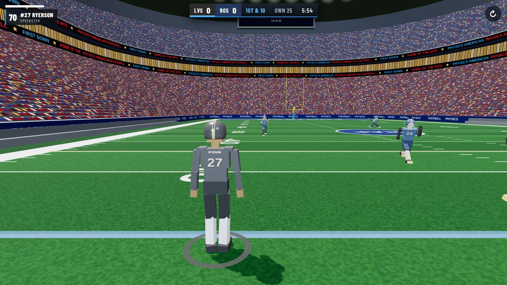
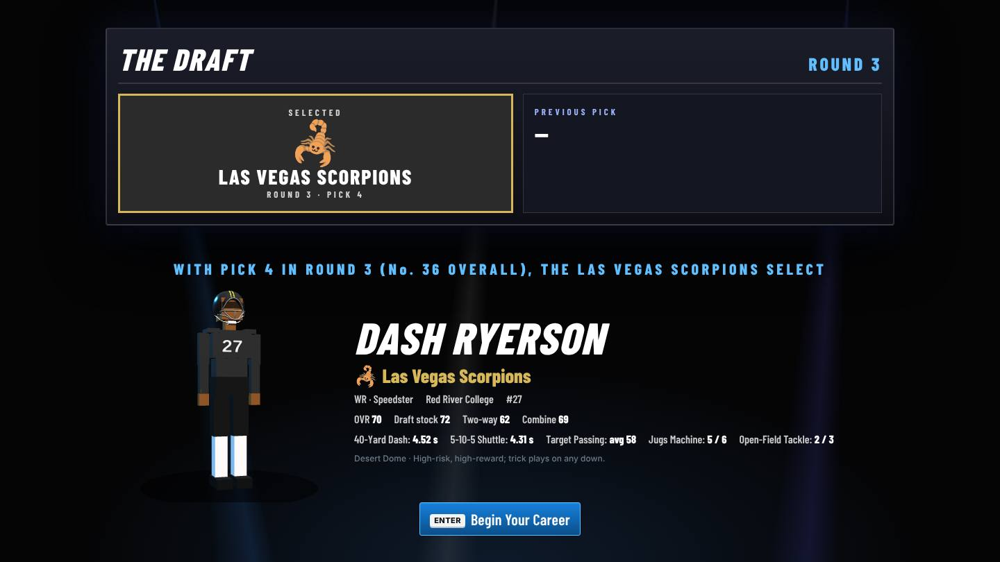
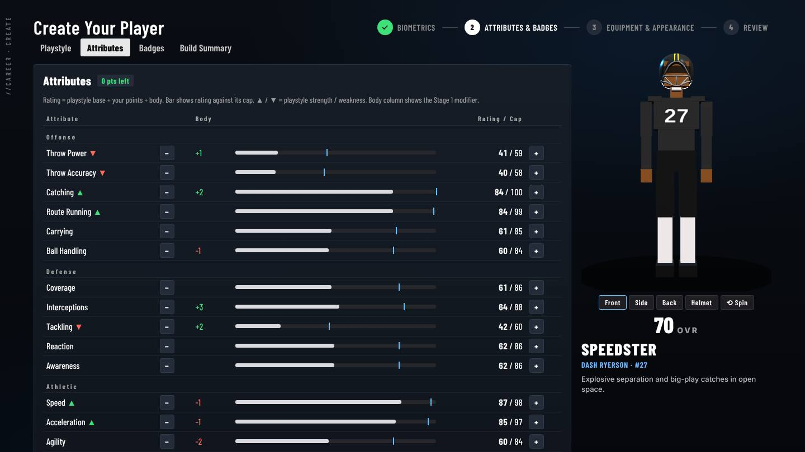
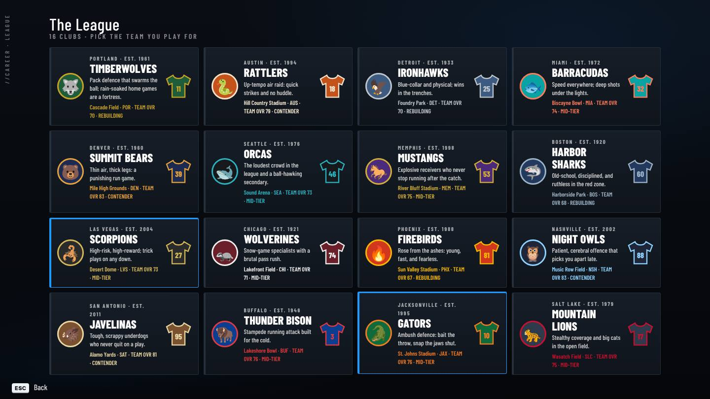

Four-on-four American football where every player is a ragdoll driven by real physics. No canned tackle animations: every hit, stumble and broken tackle is worked out by the simulation.
Physics American Football puts you on a full-size field as one player in a 4v4 game. Your player is a jointed ragdoll whose muscles push him towards running, cutting, jumping and catching. Contact is real: two bodies meet, momentum transfers, and someone goes down. Or he doesn't.
Line up at quarterback or receiver on offence, then cover, read and tackle on defence when possession flips. Play a single game straight away, or build a player and take him from the pre-draft combine to a championship.

In match · broadcast scoreboard
4v4Two-way football
16Clubs in the league
16Player attributes
8Playstyles
Features
What's on the field
Everything below is in the game today.
Physics-driven players
Every player is a ragdoll of linked body parts with joint limits, simulated by a physics engine. Muscle strength drives the walk, sprint, cuts, jumps and dives, so balance, momentum and footing all matter. When a player is knocked down, he loses muscle tone, falls under gravity and pushes himself back up.
Real tackles
Wrap-ups, shoulder hits, side and rear tackles, diving tackles and a big hit stick. The tackler's Tackling rating is weighed against the runner's Strength and Ball Handling. Runners can break free and stumble on, and a hard enough hit can knock the ball loose.
Throwing & catching
Aim, hold to build power and release. Throw Accuracy sets how tightly your passes land around the target, with a wider spread at full power. Receivers track the ball through the air and reach for it. Contested catches, drops, deflections and interceptions all come out of who gets there first.
4v4 rules
A quarterback and three receivers against four defenders. You get four downs to gain ten yards, and the game marks first downs, incompletions, sacks and turnovers. Interceptions and fumbles go live, so the defence can return them, including pick sixes. Possession changes swap who's on offence, and every player plays both ways.
Routes & play calling
Receivers run real routes, and you can check yours on the field before the snap. The game organiser in the pause menu sets the offensive formation (singleback to empty), the defensive coverage (Cover 1 and Cover 2, man or robber), your position, and how many players each side has in Quick Play.
Pro SetShotgun TripsSpread 2x2Cover 2 ManCover 1 Robber
Moves with the ball
Sprint on a stamina bar, tap for a late burst in the open field, juke a closing defender, hurdle into a catch, or dive for extra yards. Defenders can sink into a low defensive stance. AI teammates and opponents run routes, cover, rush and pursue on their own.
Quick Play
Pick Quick Play and you're on the field straight away. Run plays, reset with a key, and open the pause menu to reorganise both teams whenever you like. It's the fastest way to learn the physics before taking a player into a career.
Stadium presentation
A full night stadium with a packed crowd, ribbon boards and floodlights, plus a broadcast-style scoreboard. Each player carries his surname and number on his jersey. Messages call scores and turnovers by club name, e.g. "MUSTANGS TOUCHDOWN!"
Career mode
From the combine to the championship
Ten save slots, each holding its own career. Build a player, prove him at the combine, find out where he's drafted, then play the season week by week.
Pre-draft combine: five drills on the real engine: 40-yard dash, 5-10-5 shuttle, target passing, jugs machine and open-field tackling. One attempt each.
The draft: your combine results, playstyle grade and two-way grade set your draft stock, then a live pick-by-pick reveal shows which club takes you.
Season: 20 weeks against the other 15 clubs, with standings, a schedule and season and career stats. Play each game or simulate it.
Playoffs: all 16 clubs are seeded into a bracket: 1 v 16 up to the Championship.
Progression: earn XP from your performances, level up, and spend upgrade points on any attribute up to that rating's potential.

Draft night
Create a player
Built down to the inch
The creator works in three stages, with a live 3D preview you can rotate.
Biometrics: height 5'8"–6'8", weight 170–260 lb and wingspan. The body is built to true scale: a 6'8" player really does stand a foot taller than a 5'8" one, with longer arms and real reach. Build changes ratings too: heavier is stronger and harder to bring down, lighter is quicker.
Playstyle & attributes: 8 playstyles set your starting ratings and which attributes can reach 99, then you move points between all 16.
Badges: 11 badges, such as Deep Pass Specialist, Sure Hands, Break Tackle, Lockdown Coverage and Ball Hawk, each with small, specific effects.
Equipment: four helmet shells and facemasks, visor tints, gloss/matte/chrome finish, stripes, sleeves, pads, compression, wristbands, socks, cleats, eye black, skin tone, presets and a randomiser.

Creator · attributes
16 attributes
Every rating feeds a system in the game: top speed, burst, turning, contact, stamina, reading the play, reaction, throw power and accuracy, catch reach, route sharpness, fumbles, juke strength, coverage, picks and tackling.
Every club fields four named players with their own playstyle, ratings, body, gear and jersey number. Team OVR ranks clubs as contenders, mid-tier or rebuilding, and those ratings decide simulated results.
You join a real roster: when you're drafted, you replace the club's lowest-rated player, and he moves to free agency.
Offseason: after each season, contenders and rebuilding clubs make trades, players improve or decline according to their development profile, and veterans retire, replaced by rookies.
Persistent identity: every player keeps his name, look and number through possession changes, trades and save/load.

League clubs
Controls
Keyboard or touch
Choose your input on the game's first screen. Menus and on-screen prompts follow your choice (ESC / ENTER on keyboard, icons on touch), and it's remembered next time.
Keyboard & mouse
For desktops and laptops.
W A S DMove (camera-relative)MouseLook and aimShiftSprint · tap Space in a long sprint for a burstSpaceJump / leap for a catchLeft clickHold to catch · throw while aimingRight clickAim a passEJuke · hold on defence for a low stanceQTackle on defence · dive with the ballXBig hit (hit stick)1Show your route2Snap / send the receiverTDrop the ballRReset the playPPause
Touch
For phones and tablets, landscape recommended.
STICKMove: the left thumbstickSPRINTToggles sprintCATCH / THROWThe big context buttonAIMAim a passJUMPJumpJUKEJuke · hold for the defensive stanceDIVETackle / diveHITBig hitDROPDrop the ballROUTE · GOShow route, start the play
You can rearrange the buttons with Edit Button Layout in the pause menu. Touch mode also switches to a lighter graphics profile so it runs smoothly on phones.
Kick-off
Your snap
It runs in your browser on desktop or mobile, and Career saves are kept on your device.